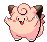

-
Bulbasaur #001
 GrassPoison
GrassPoisonThere is a plant on its back right from the day this Pokémon is born. The seed slowly grows larger.
-
Ivysaur #002
 GrassPoison
GrassPoisonWhen the bulb on its back grows larger, it appears to lose the ability to stand on its hind legs.
-
Venusaur #003
 GrassPoison
GrassPoisonIts plant blooms when it is absorbing solar energy. It stays on the move to seek sunlight
-
Charmander #004
 Fire
FireIt has a preference for hot things. When it rains, steam is said to spout from the tip of its tail.
-
Charmeleon #005
 Fire
FireIt has a barbaric nature. In battle, it whips its fiery tail around and slashes away with sharp claws.
-
Charizard #006
 Fire
FireIt spits fire that is hot enough to melt boulders. It may cause forest fires by blowing flames.
-
Siquirtle #007
 Water
WaterWhen it retracts its long neck into its shell, it squirts out water with vigorous force.
-
Wartortle #008
 Water
WaterIt is recognized as a symbol of longevity. if its shell has algae on it, that Wartortle is very old.
-
Blastoise #009
 Water
WaterIt crushes its foe under its heavy body to cause fainting in a pinch, it will withdraw inside its shell.
-
Caterpie #010
 Bug
BugFor protection, it releases a horrible srench from the antenna on its head to drive away enemies.
-
Metapod #011
 Bug
BugIt is waiting for the moment to evolve. At this stage, it can only harden, so it remains motionless to avoid attack.
-
Butterfree #012
 Bug
BugIn battle, it flaps its wings at great speed to release highly toxic dust into the air.
-
Weedle #013
 BugPoison
BugPoisonBeware of the sharp stinger on its head. It hides in grass and bushes where it eats leaves.
-
Kakuna #014
 BugPoison
BugPoisonAble to move only slightly. When endangered, it may stick out its stinger and poison its enemy.
-
Beedrill #015
 BugPoison
BugPoisonIt has three poisonous stingers on its forelegs and its tail. They are used to jab its enemy repeatedly.
-
Pidgey #016
 Normal
NormalVery docile. If attacked, it will often kick up sand to protect itself rather than fight back.
-
Pidgeotto #017
 Normal
NormalThis Pokémon is full of vitality. It constantly flies around its large territory in search of prey.
-
Pidgeot #018
 Normal
NormalThis Pokémon flies at Mach 2 speed, seeking prey. Its large talons are feared as wicked weapons.
-
Rattata #019
 Normal
NormalWill chew on anything with its fangs. If you see one, you can be certain that 40 more live in the area.
-
Raticate #020
 Normal
NormalIts hind feet are webbed. They act as flippers, so it can swim in rivers and hunt for prey.
-
Spearow #021
 Normal
NormalInept at flying high. However, it can fly around very fast to protect its territory.
-
Fearow #022
 Normal
NormalA Pokémon that dates back many years. If it senses danger, it flies high and away, instantly.
-
Ekans #023
 Poison
PoisonThe older it gets, the longer it grows. At night, it wraps its long body around tree branches to rest.
-
Arbok #024
 Poison
PoisonThe frightening patterns on its belly have been studied. Six variations have been confirmed.
-
Pikachu #025
 Eletric
EletricWhen it is angered, it immediately discharges the energy stored in the pouches in its cheeks.
-
Raichu #026
 Eletric
EletricIts tail discharges electricity into the ground, protecting it from getting shocked.
-
Sandshrew #027
 Ground
GroundIt loves to bathe in the grit of dry, sandy areas. By sand bathing, the Pokémon rids itself of dirt and moisture clinging to its body.
-
Sandslash #028
 Ground
GroundThe drier the area Sandslash lives in, the harder and smoother the Pokémon's spikes will feel when touched.
-
Nidoran #029
 Poison
PoisonFemales are more sensitive to smells than males. While foraging, they'll use their whiskers to check wind direction and stay downwind of predators.
-
Nidorina #030
 Poison
PoisonThe horn on its head has atrophied. It's thought that this happens so Nidorina's children won't get poked while their mother is feeding them.
-
Nidoqueen #031
 GroundPoison
GroundPoisonNidoqueen is better at defense than offense. With scales like armor, this Pokémon will shield its children from any kind of attack.
-
Nidoran #032
 Poison
PoisonThe horn on a male Nidoran's forehead contains a powerful poison. This is a very cautious Pokémon, always straining its large ears.
-
Nidorino #033
 Poison
PoisonWith a horn that’s harder than diamond, this Pokémon goes around shattering boulders as it searches for a moon stone.
-
Nidoking #034
 GroundPoison
GroundPoisonWhen it goes on a rampage, it's impossible to control. But in the presence of a Nidoqueen it's lived with for a long time, Nidoking calms down.
-
Clefairy #035Fairy
It is said that happiness will come to those who see a gathering of Clefairy dancing under a full moon.
-
Clefable #036
 Fairy
FairyA timid fairy Pokémon that is rarely seen, it will run and hide the moment it senses people.
-
Vulpix #037
 Fire
FireWhile young, it has six gorgeous tails. When it grows, several new tails are sprouted.
-
Ninetales #038
 Fire
FireIt is said to live 1,000 years, and each of its tails is loaded with supernatural powers.
-
Jigglypuff #039
 NormalFairy
NormalFairyWhen its huge eyes waver, it sings a mysteriously soothing melody that lulls its enemies to sleep.
-
Wigglytuff #040
 NormalFairy
NormalFairyIt has a very fine fur. Take care not to make it angry, or it may inflate steadily and hit with a body slam.
-
Zubat #041
 Poison
PoisonIt emits ultrasonic waves from its mouth to check its surroundings. Even in tight caves, Zubat flies around with skill.
-
Golbat #042
 Poison
PoisonIt loves to drink other creatures' blood. It's said that if it finds others of its kind going hungry, it sometimes shares the blood it's gathered.
-
Oddish #043
 GrassPoison
GrassPoisonIf exposed to moonlight, it starts to move. It roams far and wide at night to scatter its seeds.
-
Gloom #044
 GrassPoison
GrassPoisonIts pistils exude an incredibly foul odor. The horrid stench can cause fainting at a distance of 1.25 miles.
-
Vileplume #045
 GrassPoison
GrassPoisonIt has the world's largest petals. With every step, the petals shake out heavy clouds of toxic pollen.
-
Paras #046
 GrassBug
GrassBugBurrows under the ground to gnaw on tree roots. The mushrooms on its back absorb most of the nutrition.
-
Parasect #047
 GrassBug
GrassBugThe bug host is drained of energy by the mushroom on its back. The mushroom appears to do all the thinking.
-
Venonat #048
 BugPoison
BugPoisonPoison oozes from all over its body. It catches small bug Pokémon at night that are attracted by light.
-
Venomoth #049
 BugPoison
BugPoisonThe wings are covered with dustlike scales. Every time it flaps its wings, it looses highly toxic dust.
-
Diglett #050
 Ground
GroundIt lives about one yard underground, where it feeds on plant roots. It sometimes appears aboveground.
-
Dugtrio #051
 Ground
GroundIts three heads bob separately up and down to loosen the soil nearby, making it easier for it to burrow.
-
Meowth #052
 Normal
NormalAll it does is sleep during the daytime. At night, it patrols its territory with its eyes aglow.
-
Persian #053
 Normal
NormalAlthough its fur has many admirers, it is tough to raise as a pet because of its fickle meanness.